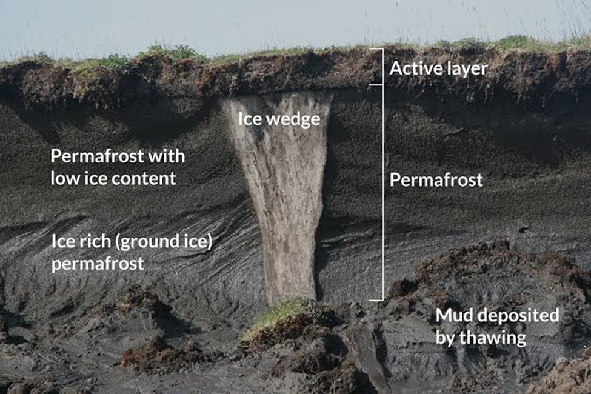
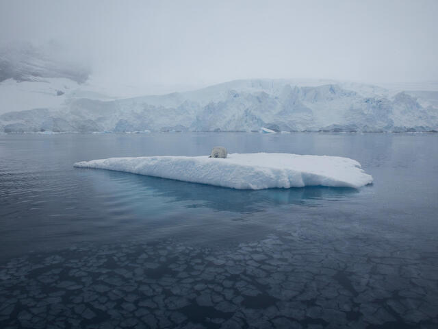
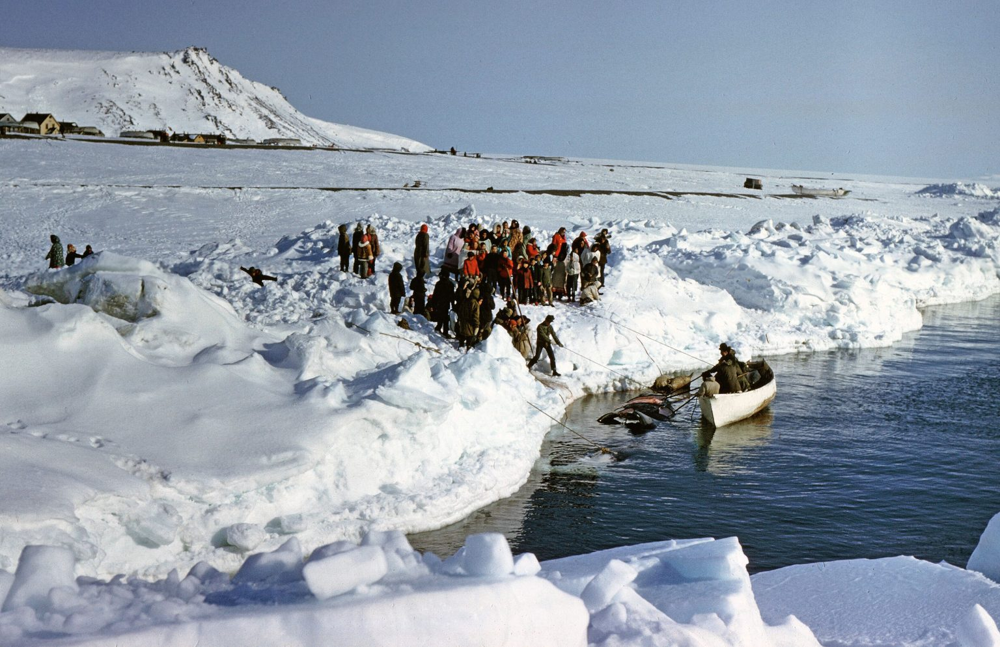

Introduction
Climate change is having profound impacts on the coldest regions of the planet, including the Arctic and Antarctic. These areas are experiencing rapid warming, leading to various environmental changes with significant consequences.
Thawing Permafrost
One of the most concerning effects of climate change in cold regions is the thawing of permafrostthawing of permafrost. Permafrost is frozen ground that stores vast amounts of carbon. As it thaws, it releases greenhouse gases, further exacerbating global warming.
Loss of Sea Ice
Arctic sea ice is rapidly declining due to rising temperatures. This loss has dire consequences for polar bears, seals, and other wildlife that depend on sea ice for hunting, breeding, and resting.
Impact on Indigenous Communities
Climate change disproportionately affects indigenous communities in cold regions. Changes in the environment disrupt traditional ways of life, threaten food security, and erode cultural heritage.
